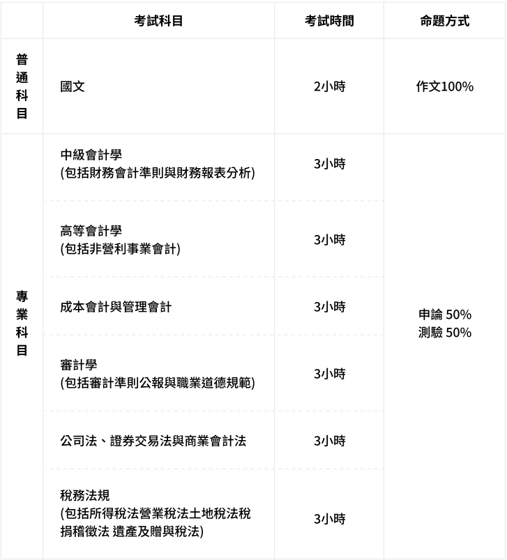

會計師 考試介紹
會計師考試資訊(最新消息－新制考試規則重要內容)
一、考試日期：每年8月中下旬
二、報名期間：每年5月中旬
三、考試科目：

四、應考資格:
- 公立或立案之私立專科以上學校或符合教育部採認規定之國外專科以上學校會計、會計技術、會計統計、會計資訊、會計與資訊科技、會計(與)財稅、財稅、財政、財政稅務科、系、組、所畢業，領有畢業證書者。
- 公立或立案之私立專科以上學校或符合教育部採認規定之國外專科以上學校第一款以外之科、系、組、所畢業，領有畢業證書，曾修習初等會計學或會計學(一)或工業會計、中級會計學或會計學(二)、高等會計學或會計學(三)、成本會計或管理會計、審計學或高等審計學、稅務會計、政府會計、會計實務、會計師業務研究、非營利事業會計、財務報表分析、財務管理或財務經濟學、財政學、經濟學、民法概要、商事法、證券交易法或證券 法規、稅務法規或租稅法規、資料處理或電子資料處理或電子計算機概論 或計算機程式與應用或電腦應用、電腦審計、會計資訊系統、統計學、職 業道德規範、公司法、商業會計法、管理學(概論)或企業管理(概論)或企業 政策或組織與管理、管理資訊系統、銀行會計、會計制度、會計師法等學 科至少七科，每學科至多採計三學分，合計二十學分以上，其中須包括中級會計學或會計學(二)、成本會計或管理會計、審計學或高等審計學等三學科，有證明文件者。
- 高等檢定考試相當類科及格者。